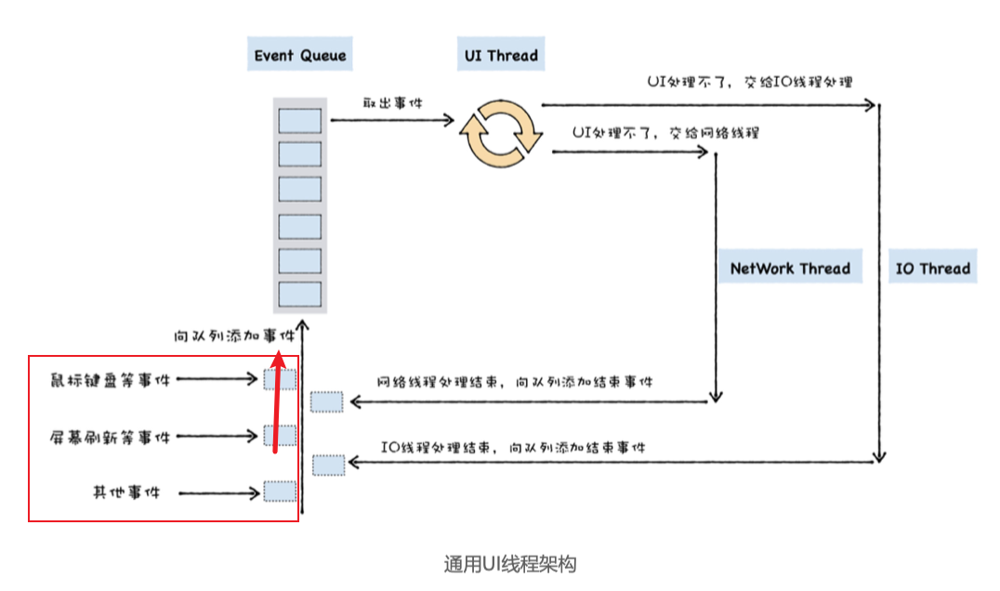
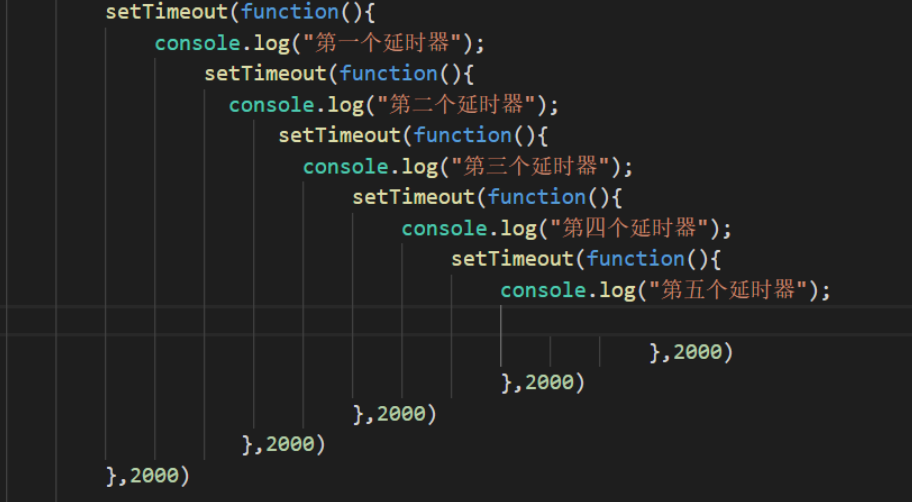
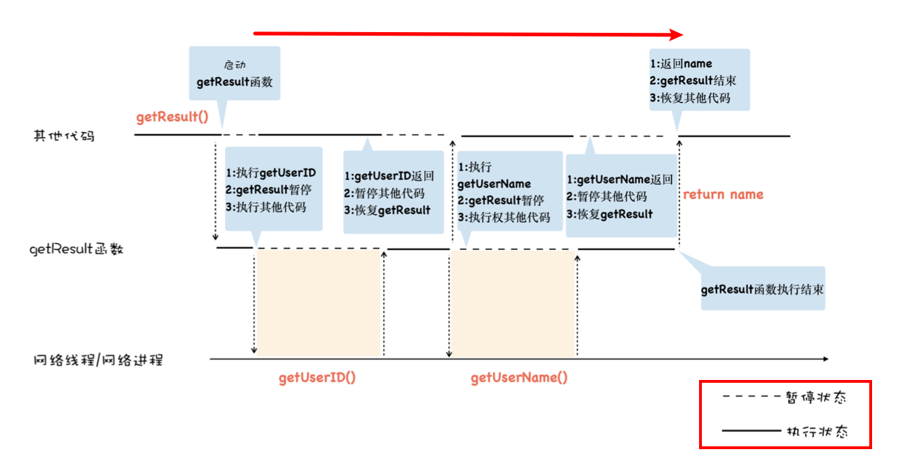
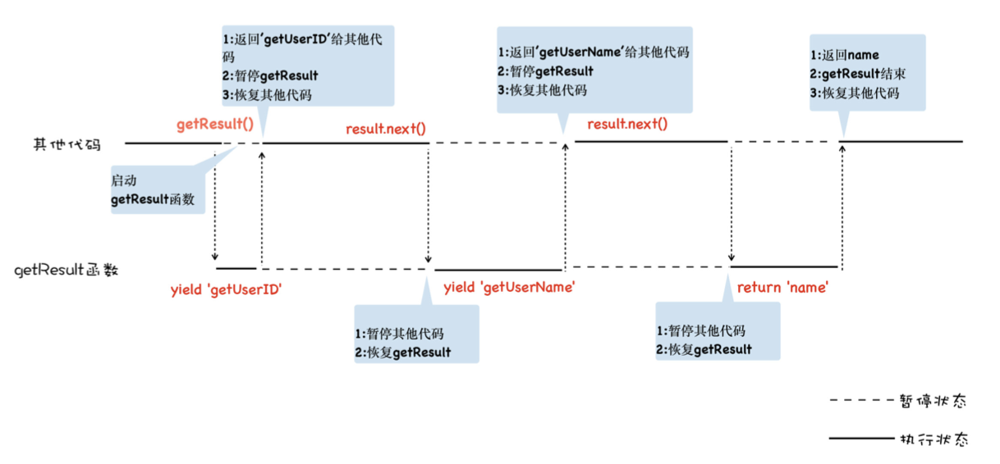
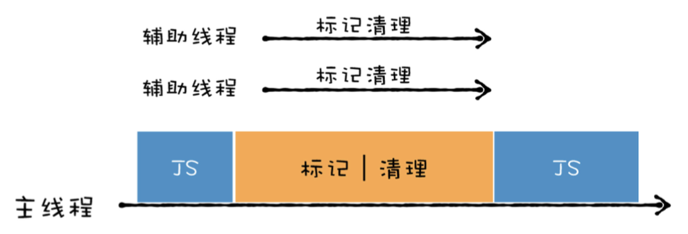

生存还是毁灭，这是个问题。
生存还是毁灭，这是个问题。To be or not to be, that is the question.
回调函数
函数作为参数传给
宿主环境，然后在宿主环境被调用，称为 回调函数;
- 同步回调: 在函数内部执行；
- 异步回调：在函数外部执行；
var myArray = ["water", "goods", "123", "like"]; function handlerArray(indexName,index){ |
UI线程架构
早期浏览器的页面是运行在一个单独的 UI 线程中的，所以要在页面中引入 JavaScript，那 么 JavaScript 也必须要运行在和页面相同的线程上，这样才能方便使用 JavaScript 来操纵 DOM，所以从一开始，JavaScript 就被设计成了运行在 UI 线程中。
UI 线程，是指运行窗口的线程.
使用操作页面时由UI线程处理，由于任务由先后，所以引入消息队列,UI线程将事件放入消息队列; 然后UI线程不停的从消息队列中取出来事件执行。
任务： UI 线程每次从消息队列中取出、执行事件的过程
function foo() { |
- 宿主将foo函数封装成一个
事件；添加到消息队列，然后setTimeout执行结束； - 主线程不断从消息队列取任务，等到时机成熟？，就执行foo函数。
什么时候才时机成熟？怎么判断时机成熟？
微任务
宏任务很简单，就是指消息队列中的等待被主线程执行的事件。每个宏任务在执行时，V8 都会重新创建栈，然后随着宏任务中函数调用，栈也随之变化，最终，当该宏任务执行结束时，整个栈又会被清空，接着主线程继续执行下一个宏任务。
微任务稍微复杂一点，其实你可以把微任务看成是一个需要异步执行的函数，执行时机是在主函数执行结束之后、当前宏任务结束之前。
任务是指：UI 线程每次从消息队列中取出、执行事件的过程
有了任务为啥还需微任务？？
- 由于主线程执行消息队列中宏任务的时间颗粒度太粗
- 可以使用同步形式的代码来编写异步调用
主线程、调用栈、消息队列
调用栈是一种数据结构，用来管理在主线程上执行的函数的调用关系;
问题一：针对栈溢出，解决方案：可以将函数封装成宏任务， 如 timeout
问题二：如果宏任务时间过长，会影响后续任务。不可控任务的时间长短；解决方案： 引入微任务。
微任务执行时机： 会在当前的任务快要执行结束时执行，你就能比较精准地控制你的回调函数的执行时机。
通俗地理解，V8 会为每个宏任务维护一个微任务队列。当 V8 执行一段 JavaScript 时，会为这段代码创建一个环境对象，微任务队列就是存放在该环境对象中的。
当你通过 Promise.resolve 生成一个微任务，该微任务会被 V8 自动添加进微任务队列，等整段代码 快要执行结束时，该环境对象也随之被销毁，但是在销毁之前，V8 会先处理微任务队列中 的微任务。
微任务是处于宏任务之前执行的.
function bar() { |
/** |
从微任务中一次性取出，顺序执行。
function foo() { |
为何会卡死？
- 当执行 foo 函数时，由于 foo 函数中调用了 Promise.resolve()，这会触发一个微任务，
- 退出当前 foo 函数的执行；
- V8 在准备退出当前的宏任务之前，会检查微任务队列，发现微任务队列中有一个微任务，于是先执行微任务。
- 由于这个微任务就是调用 foo 函数本身，又会执行第一步，进入死循环
- 导致 消息队列中的事件无法执行，
页面卡死。
await / async
JavaScript 社区探索并推出了一系列的方案，从“Promise 加 then”到“generator 加 “co”方案，再到最近推出“终极”的 async/await 方案，完美地解决了回调地狱所造成的问题。
使用 Promise 可以解决回调地狱中编码不线性的问题，但这种方式充满了 Promise 的 then() 方法，如果处理流程比较复杂的话，那么整段代码将充斥着大量的 then，异步逻辑之间依然被 then 方法打断了，因此这种方式的语义化不明显，代码不能很好地表示执行流程。
function getResult(){ |
使用 Generator 函数实现更加线性化逻辑; 执行到异步请求的时候，暂停当前函数，等异步请求返回了结果，再恢复该函数。
这个模型的关键就是实现函数暂停执行和函数恢复执行，而生成器就是为了 实现暂停函数和恢复函数而设计的。
生成器函数是一个带星号函数，配合 yield 就可以实现函数的暂停和恢复
V8 是怎么实现生成器函数的暂停执行和恢复执行的呢？
背后的魔法就是协程
1. 一个进程可以拥有多个线程一样，一个线程也可以拥有多个协程; |
正如一个进程可以拥有多个线程一样，一个线程也可以拥有多个协程。每一时刻，该线程只能执行其中某一个协程。最重要的是，协程不是被操作系统内核所管理，而完全是由程序所控制（也就是在用户态执行）。这样带来的好处就是性能得到了很大的提升，不会像线程切换那样消耗资源。
为了让你更好地理解协程是怎么执行的，我结合上面那段代码的执行过程，画出了下面 的“协程执行流程图”，你可以对照着代码来分析：
async/await：异步编程的“终极”方案
由于生成器函数可以暂停，因此我们可以在生成器内部编写完整的异步逻辑代码，不过生成 器依然需要使用额外的 co 函数来驱动生成器函数的执行，这一点非常不友好。
基于这个原因，ES7 引入了 async/await，这是 JavaScript 异步编程的一个重大改进， 它改进了生成器的缺点，提供了在不阻塞主线程的情况下使用同步代码实现异步访问资源的 能力。你可以参考下面这段使用 async/await 改造后的代码：
async function getResult() { |
虽然这种方式看起来像是同步代码，但是实际上它又是异步执行的，也就是说，在执行到 await fetch 的时候，整个函数会暂停等待 fetch 的执行结果，等到函数返回时，再恢复该函数，然后继续往下执行。
其实 async/await 技术背后的秘密就是 Promise 和生成器应用，往底层说，就是 微任务和 协程应用。要搞清楚 async 和 await 的工作原理，我们就得对 async 和 await 分开分析。
function NoResolvePromise() { |
✗ node test.js |
// 如果后边是 非promise对象 |
垃圾回收
垃圾回收是怎么实现过程
- 通过 GC Root 标记空间中活动对象和非活动对象。
- 回收非活动对象所占据的内存
- 做内存整理。
V8 采用了两个垃圾回收器，主垃圾回收器-Major GC 和副垃圾回收器 -Minor GC (Scavenger)。V8 之所以使用了两个垃圾回收器，主要 是受到了代际假说（The Generational Hypothesis）的影响。
代际假说是垃圾回收领域中一个重要的术语，它有以下两个特点：
第一个是大部分对象都是 “朝生夕死”的，也就是说大部分对象在内存中存活的时间很短，比如函数内部声明的变量，或者块级作用域中的变量，当函数或者代码块执行结束 时，作用域中定义的变量就会被销毁。因此这一类对象一经分配内存，很快就变得不可 访问；
第二个是不死的对象，会活得更久，比如全局的 window、DOM、Web API 等对象。
其实这两个特点不仅仅适用于 JavaScript，同样适用于大多数的动态语言，如 Java、 Python 等。

副垃圾回收器采用了 Scavenge 算法，是把新生代空间对半划分为两个区域，一半是对象区域，一半是空闲区域。新的数据都分配在对象区域，等待对象区域快分配满的时候，垃圾回收器便执行垃圾回收操作，之后将存活的对象从对象区域拷贝到空闲区域，并将两个区域互换。
主垃圾回收器回收器主要负责老生代中的垃圾数据的回收操作，会经历标记、清除和整理过程。
优化效率
由于 JavaScript 是运行在主线程之上的，因此，一旦执行垃圾回收算法，都需要将正在执 行的 JavaScript 脚本暂停下来，待垃圾回收完毕后再恢复脚本执行。我们把这种行为叫做 全停顿（Stop-The-World）
避免卡顿主要从两个方面考虑：
- 第一，将一个完整的垃圾回收的任务拆分成多个小的任务，这样就消灭了单个长的垃圾 回收任务；
- 第二，将标记对象、移动对象等任务转移到后台线程进行，这会大大减少主线程暂停的 时间，改善页面卡顿的问题，让动画、滚动和用户交互更加流畅。
并行回收
所谓并行回收，是指垃圾回收器在主线程上执行的过程中，还会开启多个协助线程，同时执行同样的回收工作，其工作模式如下图所示：
V8 的副垃圾回收器所采用的就是并行策略，它在执行垃圾回收的过程中，启动了多个线程来负责新生代中的垃圾清理操作，这些线程同时将对象空间中的数据移动到空闲区域。由于数据的地址发生了改变，所以还需要同步更新引用这些对象的指针。
增量回收
虽然并行策略能增加垃圾回收的效率，能够很好地优化副垃圾回收器，但是这仍然是一种全停顿的垃圾回收方式，
所谓增量式垃圾回收，是指垃圾收集器将标记工作分解为更小的块，并且穿插在主线程不同的任务之间执行。
要实现增量，需要满足两个条件
- 垃圾回收可以被随时暂停和重启，暂停时需要保存当时的扫描结果，等下一波垃圾回收 来了之后，才能继续启动。
- 在暂停期间，被标记好的垃圾数据如果被 JavaScript 代码修改了，那么垃圾回收器需要能够正确地处理。
垃圾回收器的暂停与恢复
在没有采用增量算法之前，V8 使用黑色和白色来标记数据。在执行一 次完整的垃圾回收之前，垃圾回收器会将所有的数据设置为白色，用来表示这些数据还没有被标记，然后垃圾回收器在会从 GC Roots 出发，将所有能访问到的数据标记为黑色。遍历结束之后，被标记为黑色的数据就是活动数据，那些白色数据就是垃圾数据。如下图所示：
为了解决，重启时找到启动点，引入了 灰色。
三色标记法
- 黑色：节点被引用，该节点的字节点都已经标记完成
- 灰色：节点被引用，但是子节点没有被垃圾回收器标记处理，目前正在处理的节点
- 白色：节点没有被引用，如果本轮结束还是白色，就会被回收。
- 黑色节点如果引用白色节点，则将白色变为黑色
并发回收
以上的回收仍旧会阻塞主线程，有没有办法在不阻塞主线程的情况下，执行垃圾回收操作呢？
并发回收机制
所谓并发回收，是指主线程在执行 JavaScript 的过程中，辅助线程能够在后台完成执行垃 圾回收的操作。
- 由于主线程随时都又可能更改标记过的内容，会使得辅助线程工作无效
- 主线程和辅助线程极有可能在同一时间去更改同一个对象，这就需要额外实现读 写锁的一些功能了。